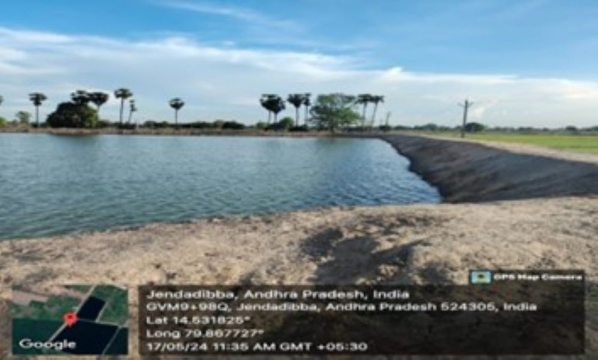
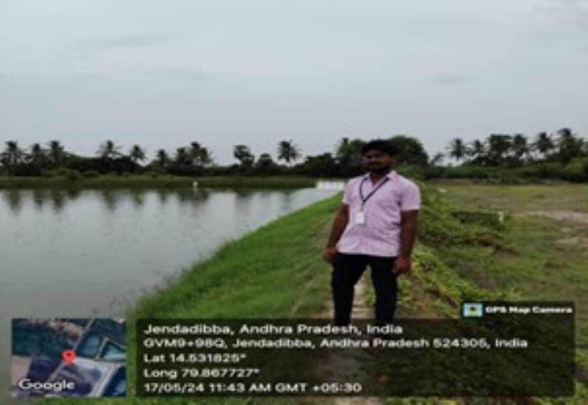

WEEKLY REPORT
WEEK- 1 (From 15-05-24 to 19-05-24)
Objective of the Activity Done: Conducted a survey and done a Research about the aqua farming.
Detailed Report:
Day 1:
- I conducted a survey , to select the area which is best in aquaculture. And finally I selected the Jendadibba area.
Day 2:
- I went to the selected area , mandal sachivalayam to take permission for conduct of project in that area.
Day 3:
- I meet with aqua farmers to know about the aquaculture farming and that concept .
Day 4:
- I consult a few more farmers and interact with them on aqua farming and gain some knowledge about the aquaculture.
Day 5:
- Done a research on aqua farming and came to know about the necessary conditions which we should maintain in aquaculture.
Day 6:
- I went to the farming area and observe that how the farming site is it.

